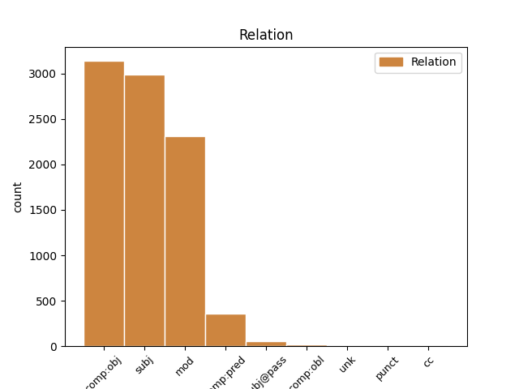
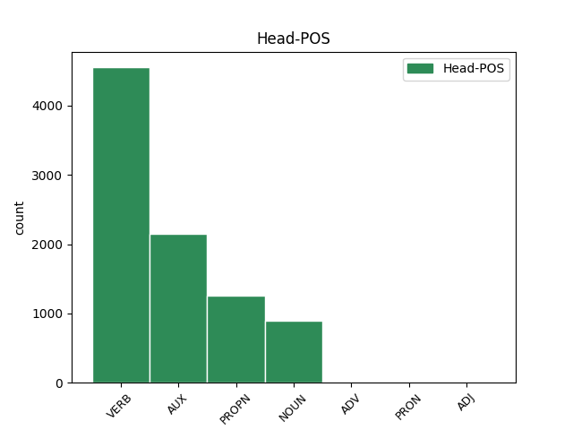
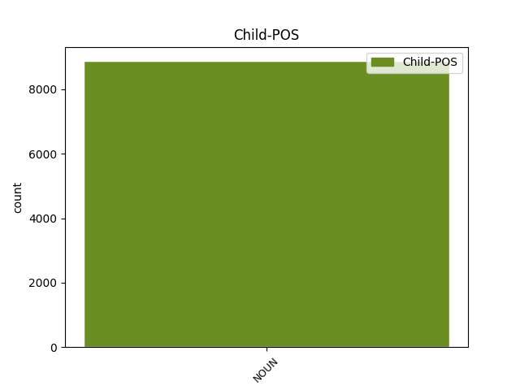

Distribution of features within this leaf



Agreement Rules sorted by frequency.
- When the dependent token is the direct object complements(comp:obj) of the head token, and the head token is VERB and the dependent token is NOUN.
1 उन्होंने _ _ _ _ 0 _ _ _
2 यहां _ _ _ _ 0 _ _ _
3 वेटिकन _ _ _ _ 0 _ _ _
4 दूतावास _ _ _ _ 0 _ _ _
5 में _ _ _ _ 0 _ _ _
6 एक _ _ _ _ 0 _ _ _
7 शोक _ _ _ _ 0 _ _ _
8 पुस्तिका _ _ _ _ 0 _ _ _
9 पर _ _ _ _ 0 _ _ _
10 हस्ताक्षर _ _ _ _ 0 _ _ _
11 कर _ _ _ _ 0 _ _ _
12 पोप _ _ _ _ 0 _ _ _
13 जॉन _ _ _ _ 0 _ _ _
14 पॉल _ _ _ _ 0 _ _ _
15 द्वितीय _ _ _ _ 0 _ _ _
16 के _ _ _ _ 0 _ _ _
17 निधन _ _ _ _ 0 _ _ _
18 पर _ _ _ _ 0 _ _ _
19 गहरा _ _ _ _ 0 _ _ _
20 दुख दुख NOUN NN Case=Nom|Gender=Masc|Number=Sing|Person=3 22 comp:obj _ ChunkId=NP8|ChunkType=head|Tam=0|Translit=dukha|Vib=0
21 प्रकट _ _ _ _ 0 _ _ _
22 किया कर VERB VM Aspect=Perf|Gender=Masc|Number=Sing|VerbForm=Part|Voice=Act 0 _ _ _
23 । _ _ _ _ 0 _ _ _
1 अब _ _ _ _ 0 _ _ _
2 जनसंपर्क _ _ _ _ 0 _ _ _
3 का _ _ _ _ 0 _ _ _
4 हमारा _ _ _ _ 0 _ _ _
5 अनुभव अनुभव NOUN NN Case=Nom|Gender=Masc|Number=Sing|Person=3 9 subj _ ChunkId=NP4|ChunkType=head|Tam=0|Translit=anubhava|Vib=0
6 भी _ _ _ _ 0 _ _ _
7 गहरा _ _ _ _ 0 _ _ _
8 हो _ _ _ _ 0 _ _ _
9 गया जा AUX VAUX Aspect=Perf|Gender=Masc|Number=Sing|VerbForm=Part 0 _ _ _
10 है _ _ _ _ 0 _ _ _
11 । _ _ _ _ 0 _ _ _
1 चीनी _ _ _ _ 0 _ _ _
2 प्रधानमंत्री _ _ _ _ 0 _ _ _
3 वेन _ _ _ _ 0 _ _ _
4 जियाबाओ _ _ _ _ 0 _ _ _
5 की _ _ _ _ 0 _ _ _
6 भारत _ _ _ _ 0 _ _ _
7 यात्रा _ _ _ _ 0 _ _ _
8 से _ _ _ _ 0 _ _ _
9 पहले _ _ _ _ 0 _ _ _
10 निर्वासित _ _ _ _ 0 _ _ _
11 तिब्बती _ _ _ _ 0 _ _ _
12 आध्यात्मिक _ _ _ _ 0 _ _ _
13 नेता नेता NOUN NN Case=Acc|Gender=Masc|Number=Sing|Person=3 15 mod _ ChunkId=NP3|ChunkType=head|Tam=0|Translit=netā|Vib=0
14 दलाई _ _ _ _ 0 _ _ _
15 लामा लामा PROPN NNP Case=Acc|Gender=Masc|Number=Sing|Person=3 0 _ _ _
16 ने _ _ _ _ 0 _ _ _
17 कहा _ _ _ _ 0 _ _ _
18 है _ _ _ _ 0 _ _ _
19 कि _ _ _ _ 0 _ _ _
20 चीनी _ _ _ _ 0 _ _ _
21 और _ _ _ _ 0 _ _ _
22 तिब्बती _ _ _ _ 0 _ _ _
23 एक _ _ _ _ 0 _ _ _
24 - _ _ _ _ 0 _ _ _
25 दूसरे _ _ _ _ 0 _ _ _
26 की _ _ _ _ 0 _ _ _
27 सांस्कृतिक _ _ _ _ 0 _ _ _
28 विशिष्टता _ _ _ _ 0 _ _ _
29 का _ _ _ _ 0 _ _ _
30 आदर _ _ _ _ 0 _ _ _
31 करते _ _ _ _ 0 _ _ _
32 हैं _ _ _ _ 0 _ _ _
33 । _ _ _ _ 0 _ _ _
1 इन _ _ _ _ 0 _ _ _
2 दोनों _ _ _ _ 0 _ _ _
3 देशों _ _ _ _ 0 _ _ _
4 के _ _ _ _ 0 _ _ _
5 बीच _ _ _ _ 0 _ _ _
6 रिश्ते _ _ _ _ 0 _ _ _
7 में _ _ _ _ 0 _ _ _
8 सुधार _ _ _ _ 0 _ _ _
9 से _ _ _ _ 0 _ _ _
10 करोड़ों _ _ _ _ 0 _ _ _
11 लोगों _ _ _ _ 0 _ _ _
12 का _ _ _ _ 0 _ _ _
13 भला भला NOUN NN Case=Nom|Gender=Masc|Number=Sing|Person=3 14 subj _ ChunkId=NP5|ChunkType=head|Tam=0|Translit=bhalā|Vib=0
14 होगा हो VERB VM Gender=Masc|Mood=Ind|Number=Sing|Person=3|Tense=Fut|VerbForm=Fin|Voice=Act 0 _ _ _
15 । _ _ _ _ 0 _ _ _
1 वोल्कर _ _ _ _ 0 _ _ _
2 ने _ _ _ _ 0 _ _ _
3 कहा _ _ _ _ 0 _ _ _
4 , _ _ _ _ 0 _ _ _
5 आज आज NOUN NN Case=Nom|Gender=Masc|Number=Sing|Person=3 6 mod _ ChunkId=NP2|ChunkType=child|Tam=0|Translit=āja|Vib=0
6 दिन दिन NOUN NN Case=Acc|Gender=Masc|Number=Sing|Person=3 0 _ _ _
7 तक _ _ _ _ 0 _ _ _
8 मुझे _ _ _ _ 0 _ _ _
9 इसकी _ _ _ _ 0 _ _ _
10 कोई _ _ _ _ 0 _ _ _
11 जानकारी _ _ _ _ 0 _ _ _
12 नहीं _ _ _ _ 0 _ _ _
13 है _ _ _ _ 0 _ _ _
14 । _ _ _ _ 0 _ _ _
1 यद्यपि _ _ _ _ 0 _ _ _
2 उन्हें _ _ _ _ 0 _ _ _
3 इस _ _ _ _ 0 _ _ _
4 बात _ _ _ _ 0 _ _ _
5 पर _ _ _ _ 0 _ _ _
6 शक़ शक NOUN NN Case=Nom|Gender=Masc|Number=Sing|Person=3 7 comp:pred _ ChunkId=NP3|ChunkType=head|Tam=0|Translit=śaqa|Vib=0
7 था था AUX VM Gender=Masc|Mood=Ind|Number=Sing|Tense=Past|VerbForm=Fin|Voice=Act 0 _ _ _
8 कि _ _ _ _ 0 _ _ _
9 अन्नान _ _ _ _ 0 _ _ _
10 ' _ _ _ _ 0 _ _ _
11 कोटेसना _ _ _ _ 0 _ _ _
12 ' _ _ _ _ 0 _ _ _
13 की _ _ _ _ 0 _ _ _
14 निविदा _ _ _ _ 0 _ _ _
15 के _ _ _ _ 0 _ _ _
16 बारे _ _ _ _ 0 _ _ _
17 में _ _ _ _ 0 _ _ _
18 वाकई _ _ _ _ 0 _ _ _
19 नहीं _ _ _ _ 0 _ _ _
20 जानते _ _ _ _ 0 _ _ _
21 लेकिन _ _ _ _ 0 _ _ _
22 वोल्कर _ _ _ _ 0 _ _ _
23 इस _ _ _ _ 0 _ _ _
24 बात _ _ _ _ 0 _ _ _
25 से _ _ _ _ 0 _ _ _
26 सहमत _ _ _ _ 0 _ _ _
27 थे _ _ _ _ 0 _ _ _
28 कि _ _ _ _ 0 _ _ _
29 अन्नान _ _ _ _ 0 _ _ _
30 ने _ _ _ _ 0 _ _ _
31 कोटेसना _ _ _ _ 0 _ _ _
32 की _ _ _ _ 0 _ _ _
33 निविदा _ _ _ _ 0 _ _ _
34 पास _ _ _ _ 0 _ _ _
35 कराने _ _ _ _ 0 _ _ _
36 के _ _ _ _ 0 _ _ _
37 लिए _ _ _ _ 0 _ _ _
38 किसी _ _ _ _ 0 _ _ _
39 प्रभाव _ _ _ _ 0 _ _ _
40 का _ _ _ _ 0 _ _ _
41 इस्तेमाल _ _ _ _ 0 _ _ _
42 नहीं _ _ _ _ 0 _ _ _
43 किया _ _ _ _ 0 _ _ _
44 । _ _ _ _ 0 _ _ _
1 ग्रामीण _ _ _ _ 0 _ _ _
2 ज्ञान _ _ _ _ 0 _ _ _
3 केंद्र _ _ _ _ 0 _ _ _
4 को _ _ _ _ 0 _ _ _
5 उन्होंने _ _ _ _ 0 _ _ _
6 रोजगार _ _ _ _ 0 _ _ _
7 का _ _ _ _ 0 _ _ _
8 एक _ _ _ _ 0 _ _ _
9 अन्य _ _ _ _ 0 _ _ _
10 स्त्रोत स्त्रोत NOUN NN Case=Nom|Gender=Masc|Number=Sing|Person=3 11 mod _ ChunkId=NP4|ChunkType=head|Tam=0|Translit=strota|Vib=0
11 बताया बता VERB VM Aspect=Perf|Gender=Masc|Number=Sing|VerbForm=Part|Voice=Act 0 _ _ _
12 । _ _ _ _ 0 _ _ _
1 पासवान _ _ _ _ 0 _ _ _
2 ने _ _ _ _ 0 _ _ _
3 बृहस्पतिवार _ _ _ _ 0 _ _ _
4 को _ _ _ _ 0 _ _ _
5 उनके _ _ _ _ 0 _ _ _
6 कमांडो _ _ _ _ 0 _ _ _
7 वापस _ _ _ _ 0 _ _ _
8 लेने _ _ _ _ 0 _ _ _
9 के _ _ _ _ 0 _ _ _
10 राज्य _ _ _ _ 0 _ _ _
11 प्रशासन _ _ _ _ 0 _ _ _
12 के _ _ _ _ 0 _ _ _
13 प्रस्ताव _ _ _ _ 0 _ _ _
14 पर _ _ _ _ 0 _ _ _
15 कड़ी _ _ _ _ 0 _ _ _
16 नाराजगी नाराजगी NOUN NN Case=Nom|Gender=Fem|Number=Sing|Person=3 17 comp:pred _ ChunkId=NP7|ChunkType=head|Tam=0|Translit=nārājagī|Vib=0
17 जताई जता VERB VM Aspect=Perf|Gender=Fem|Number=Sing|VerbForm=Part|Voice=Act 0 _ _ _
18 थी _ _ _ _ 0 _ _ _
19 और _ _ _ _ 0 _ _ _
20 चुनावों _ _ _ _ 0 _ _ _
21 में _ _ _ _ 0 _ _ _
22 डीजीपी _ _ _ _ 0 _ _ _
23 की _ _ _ _ 0 _ _ _
24 भूमिका _ _ _ _ 0 _ _ _
25 संदिग्ध _ _ _ _ 0 _ _ _
26 होने _ _ _ _ 0 _ _ _
27 का _ _ _ _ 0 _ _ _
28 आरोप _ _ _ _ 0 _ _ _
29 लगाया _ _ _ _ 0 _ _ _
30 था _ _ _ _ 0 _ _ _
31 । _ _ _ _ 0 _ _ _
1 सामान्य _ _ _ _ 0 _ _ _
2 शयनयान _ _ _ _ 0 _ _ _
3 श्रेणी _ _ _ _ 0 _ _ _
4 के _ _ _ _ 0 _ _ _
5 डिब्बों _ _ _ _ 0 _ _ _
6 वाली _ _ _ _ 0 _ _ _
7 यह _ _ _ _ 0 _ _ _
8 टूरिस्ट _ _ _ _ 0 _ _ _
9 स्पेशल _ _ _ _ 0 _ _ _
10 ट्रेन ट्रेन NOUN NN Case=Nom|Gender=Fem|Number=Sing|Person=3 20 subj@pass _ ChunkId=NP3|ChunkType=head|Tam=0|Translit=ṭrena|Vib=0
11 ' _ _ _ _ 0 _ _ _
12 पैलेस _ _ _ _ 0 _ _ _
13 ऑन _ _ _ _ 0 _ _ _
14 व्हील्स _ _ _ _ 0 _ _ _
15 ' _ _ _ _ 0 _ _ _
16 की _ _ _ _ 0 _ _ _
17 तरह _ _ _ _ 0 _ _ _
18 ही _ _ _ _ 0 _ _ _
19 चलाई _ _ _ _ 0 _ _ _
20 जाएगी जा AUX VAUX Gender=Fem|Mood=Ind|Number=Sing|Person=3|Tense=Fut|VerbForm=Fin 0 _ _ _
21 । _ _ _ _ 0 _ _ _
1 पाकिस्तान _ _ _ _ 0 _ _ _
2 से _ _ _ _ 0 _ _ _
3 होकर _ _ _ _ 0 _ _ _
4 गुज़रने _ _ _ _ 0 _ _ _
5 वाली _ _ _ _ 0 _ _ _
6 भारत _ _ _ _ 0 _ _ _
7 - _ _ _ _ 0 _ _ _
8 ईरान _ _ _ _ 0 _ _ _
9 गैस _ _ _ _ 0 _ _ _
10 पाइप _ _ _ _ 0 _ _ _
11 लाइन _ _ _ _ 0 _ _ _
12 के _ _ _ _ 0 _ _ _
13 बारे _ _ _ _ 0 _ _ _
14 में _ _ _ _ 0 _ _ _
15 उन्होंने _ _ _ _ 0 _ _ _
16 कहा _ _ _ _ 0 _ _ _
17 कि _ _ _ _ 0 _ _ _
18 आपसी _ _ _ _ 0 _ _ _
19 भरोसा _ _ _ _ 0 _ _ _
20 बढ़ाने _ _ _ _ 0 _ _ _
21 में _ _ _ _ 0 _ _ _
22 यह _ _ _ _ 0 _ _ _
23 एक _ _ _ _ 0 _ _ _
24 बड़ा _ _ _ _ 0 _ _ _
25 कदम _ _ _ _ 0 _ _ _
26 हो _ _ _ _ 0 _ _ _
27 सकता _ _ _ _ 0 _ _ _
28 है _ _ _ _ 0 _ _ _
29 और _ _ _ _ 0 _ _ _
30 आपसी _ _ _ _ 0 _ _ _
31 सहयोग _ _ _ _ 0 _ _ _
32 से _ _ _ _ 0 _ _ _
33 हम _ _ _ _ 0 _ _ _
34 पर्यटन पर्यटन NOUN NN Case=Acc|Gender=Masc|Number=Sing|Person=3 43 comp:obl _ ChunkId=NP8|ChunkType=head|SpaceAfter=No|Tam=0|Translit=paryaṭana|Vib=0
35 , _ _ _ _ 0 _ _ _
36 व्यापार _ _ _ _ 0 _ _ _
37 और _ _ _ _ 0 _ _ _
38 कई _ _ _ _ 0 _ _ _
39 अन्य _ _ _ _ 0 _ _ _
40 क्षेत्रों _ _ _ _ 0 _ _ _
41 को _ _ _ _ 0 _ _ _
42 बढ़ावा _ _ _ _ 0 _ _ _
43 दे दे VERB VM Gender=Masc|Number=Plur|Person=1|Voice=Act 0 _ _ _
44 सकते _ _ _ _ 0 _ _ _
45 हैं _ _ _ _ 0 _ _ _
46 । _ _ _ _ 0 _ _ _
1 लेकिन _ _ _ _ 0 _ _ _
2 नारो _ _ _ _ 0 _ _ _
3 तीन _ _ _ _ 0 _ _ _
4 माह माह NOUN NN Case=Nom|Gender=Masc|Number=Sing|Person=3 5 mod _ ChunkId=NP2|ChunkType=head|Tam=0|Translit=māha|Vib=0
5 पहले पहले ADV NST AdpType=Post|Case=Nom|Gender=Masc|Number=Sing|Person=3 0 _ _ _
6 भाल _ _ _ _ 0 _ _ _
7 सिंह _ _ _ _ 0 _ _ _
8 के _ _ _ _ 0 _ _ _
9 साथ _ _ _ _ 0 _ _ _
10 घर _ _ _ _ 0 _ _ _
11 से _ _ _ _ 0 _ _ _
12 भाग _ _ _ _ 0 _ _ _
13 गई _ _ _ _ 0 _ _ _
14 थी _ _ _ _ 0 _ _ _
15 । _ _ _ _ 0 _ _ _
1 मंगलवार _ _ _ _ 0 _ _ _
2 को _ _ _ _ 0 _ _ _
3 जारी _ _ _ _ 0 _ _ _
4 बयान _ _ _ _ 0 _ _ _
5 में _ _ _ _ 0 _ _ _
6 कहा _ _ _ _ 0 _ _ _
7 गया _ _ _ _ 0 _ _ _
8 है _ _ _ _ 0 _ _ _
9 कि _ _ _ _ 0 _ _ _
10 आखिरी _ _ _ _ 0 _ _ _
11 समय समय NOUN NN Case=Nom|Gender=Masc|Number=Sing|Person=3 19 mod _ ChunkId=NP3|ChunkType=head|Tam=0|Translit=samaya|Vib=0
12 उनकी _ _ _ _ 0 _ _ _
13 पत्नी _ _ _ _ 0 _ _ _
14 और _ _ _ _ 0 _ _ _
15 बच्चे _ _ _ _ 0 _ _ _
16 जेम्स _ _ _ _ 0 _ _ _
17 और _ _ _ _ 0 _ _ _
18 ग्रेटेल _ _ _ _ 0 _ _ _
19 उनके वह PRON PRP Case=Acc,Gen|Gender=Masc|Number=Sing|Person=3|Polite=Form|Poss=Yes|PronType=Prs 0 _ _ _
20 पास _ _ _ _ 0 _ _ _
21 थे _ _ _ _ 0 _ _ _
22 । _ _ _ _ 0 _ _ _
1 कभी _ _ _ _ 0 _ _ _
2 इन _ _ _ _ 0 _ _ _
3 तीनों _ _ _ _ 0 _ _ _
4 का _ _ _ _ 0 _ _ _
5 निवासस्थल _ _ _ _ 0 _ _ _
6 रहा _ _ _ _ 0 _ _ _
7 चित्तौडगढ़ _ _ _ _ 0 _ _ _
8 का _ _ _ _ 0 _ _ _
9 किला _ _ _ _ 0 _ _ _
10 आज आज NOUN NN Case=Nom|Gender=Masc|Number=Sing|Person=3 21 mod _ ChunkId=NP6|ChunkType=head|Tam=0|Translit=āja|Vib=0
11 भी _ _ _ _ 0 _ _ _
12 इन _ _ _ _ 0 _ _ _
13 सभी _ _ _ _ 0 _ _ _
14 की _ _ _ _ 0 _ _ _
15 स्मृतियों _ _ _ _ 0 _ _ _
16 को _ _ _ _ 0 _ _ _
17 संजोए _ _ _ _ 0 _ _ _
18 पूरी _ _ _ _ 0 _ _ _
19 शान _ _ _ _ 0 _ _ _
20 से _ _ _ _ 0 _ _ _
21 खड़ा खडा ADJ JJ Gender=Masc|Number=Sing 0 _ _ _
22 है _ _ _ _ 0 _ _ _
23 । _ _ _ _ 0 _ _ _
1 कर्फ्यू _ _ _ _ 0 _ _ _
2 की _ _ _ _ 0 _ _ _
3 घोषणा _ _ _ _ 0 _ _ _
4 होते _ _ _ _ 0 _ _ _
5 ही _ _ _ _ 0 _ _ _
6 लोग _ _ _ _ 0 _ _ _
7 घरों _ _ _ _ 0 _ _ _
8 को _ _ _ _ 0 _ _ _
9 लौट _ _ _ _ 0 _ _ _
10 गए _ _ _ _ 0 _ _ _
11 और _ _ _ _ 0 _ _ _
12 जो _ _ _ _ 0 _ _ _
13 सड़क _ _ _ _ 0 _ _ _
14 पर _ _ _ _ 0 _ _ _
15 या _ _ _ _ 0 _ _ _
16 इधर इधर NOUN NSTC AdpType=Post|Case=Nom|Gender=Masc|Number=Sing|Person=3 18 cc _ AltTag=nst-NOUN|ChunkId=NP7|ChunkType=child|Translit=idhara
17 - _ _ _ _ 0 _ _ _
18 उधर उधर ADV NST AdpType=Post|Case=Nom|Gender=Masc|Number=Sing|Person=3 0 _ _ _
19 थे _ _ _ _ 0 _ _ _
20 , _ _ _ _ 0 _ _ _
21 उन्हें _ _ _ _ 0 _ _ _
22 पुलिस _ _ _ _ 0 _ _ _
23 ने _ _ _ _ 0 _ _ _
24 पहुंचा _ _ _ _ 0 _ _ _
25 दिया _ _ _ _ 0 _ _ _
26 । _ _ _ _ 0 _ _ _
1 वाजपेयी _ _ _ _ 0 _ _ _
2 ने _ _ _ _ 0 _ _ _
3 चेतावनी _ _ _ _ 0 _ _ _
4 देते _ _ _ _ 0 _ _ _
5 हुए _ _ _ _ 0 _ _ _
6 कहा _ _ _ _ 0 _ _ _
7 कि _ _ _ _ 0 _ _ _
8 चुनावी _ _ _ _ 0 _ _ _
9 हिंसा _ _ _ _ 0 _ _ _
10 में _ _ _ _ 0 _ _ _
11 बढ़ोतरी बढ़ोतरी NOUN NN Case=Nom|Gender=Fem|Number=Sing|Person=3 16 comp:obj _ ChunkId=NP4|ChunkType=head|Tam=0|Translit=baṛhotarī|Vib=0
12 लोकतंत्र _ _ _ _ 0 _ _ _
13 के _ _ _ _ 0 _ _ _
14 लिए _ _ _ _ 0 _ _ _
15 खतरनाक _ _ _ _ 0 _ _ _
16 बात बात NOUN NN Case=Nom|Gender=Fem|Number=Sing|Person=3 0 _ _ _
17 है _ _ _ _ 0 _ _ _
18 । _ _ _ _ 0 _ _ _
1 इससे _ _ _ _ 0 _ _ _
2 सीडी _ _ _ _ 0 _ _ _
3 में _ _ _ _ 0 _ _ _
4 निरंतरता _ _ _ _ 0 _ _ _
5 नहीं _ _ _ _ 0 _ _ _
6 है _ _ _ _ 0 _ _ _
7 और _ _ _ _ 0 _ _ _
8 तस्वीरें _ _ _ _ 0 _ _ _
9 भी _ _ _ _ 0 _ _ _
10 ऊपर ऊपर NOUN NSTC AdpType=Post|Case=Nom|Gender=Masc|Number=Sing|Person=3 12 unk _ AltTag=nst-NOUN|ChunkId=NP5|ChunkType=child|Translit=ūpara
11 - _ _ _ _ 0 _ _ _
12 नीचे नीचे ADV NST AdpType=Post|Case=Nom|Gender=Masc|Number=Sing|Person=3 0 _ _ _
13 उछलती _ _ _ _ 0 _ _ _
14 नजर _ _ _ _ 0 _ _ _
15 आई _ _ _ _ 0 _ _ _
16 हैं _ _ _ _ 0 _ _ _
17 । _ _ _ _ 0 _ _ _
1 उदाहरण _ _ _ _ 0 _ _ _
2 के _ _ _ _ 0 _ _ _
3 लिए _ _ _ _ 0 _ _ _
4 , _ _ _ _ 0 _ _ _
5 यदि _ _ _ _ 0 _ _ _
6 कोई कोई PRON PRP Case=Nom|Gender=Masc|Number=Sing|Person=3|PronType=Prs 0 _ _ _
7 म्यूचुअल _ _ _ _ 0 _ _ _
8 फंड फंड NOUN NN Case=Nom|Gender=Masc|Number=Sing|Person=3 6 comp:obj _ ChunkId=NP2|ChunkType=head|Tam=0|Translit=phaṁḍa|Vib=0
9 ऐसे _ _ _ _ 0 _ _ _
10 समय _ _ _ _ 0 _ _ _
11 में _ _ _ _ 0 _ _ _
12 बैंकिंग _ _ _ _ 0 _ _ _
13 स्कीम _ _ _ _ 0 _ _ _
14 लॉंच _ _ _ _ 0 _ _ _
15 करता _ _ _ _ 0 _ _ _
16 है _ _ _ _ 0 _ _ _
17 जब _ _ _ _ 0 _ _ _
18 बैंकिंग _ _ _ _ 0 _ _ _
19 कंपनियों _ _ _ _ 0 _ _ _
20 के _ _ _ _ 0 _ _ _
21 शेयर _ _ _ _ 0 _ _ _
22 काफी _ _ _ _ 0 _ _ _
23 ऊंचाई _ _ _ _ 0 _ _ _
24 पर _ _ _ _ 0 _ _ _
25 हैं _ _ _ _ 0 _ _ _
26 तो _ _ _ _ 0 _ _ _
27 सेंसेक्स _ _ _ _ 0 _ _ _
28 के _ _ _ _ 0 _ _ _
29 गिरते _ _ _ _ 0 _ _ _
30 ही _ _ _ _ 0 _ _ _
31 स्कीम _ _ _ _ 0 _ _ _
32 का _ _ _ _ 0 _ _ _
33 एनएवी _ _ _ _ 0 _ _ _
34 अंकित _ _ _ _ 0 _ _ _
35 मूल्य _ _ _ _ 0 _ _ _
36 से _ _ _ _ 0 _ _ _
37 कम _ _ _ _ 0 _ _ _
38 हो _ _ _ _ 0 _ _ _
39 जाएगा _ _ _ _ 0 _ _ _
40 और _ _ _ _ 0 _ _ _
41 आप _ _ _ _ 0 _ _ _
42 अफसोस _ _ _ _ 0 _ _ _
43 करते _ _ _ _ 0 _ _ _
44 नजर _ _ _ _ 0 _ _ _
45 आएंगे _ _ _ _ 0 _ _ _
46 । _ _ _ _ 0 _ _ _
Disagree Examples:
1 मुख्य _ _ _ _ 0 _ _ _
2 रूप _ _ _ _ 0 _ _ _
3 से _ _ _ _ 0 _ _ _
4 यह _ _ _ _ 0 _ _ _
5 प्रदर्शन _ _ _ _ 0 _ _ _
6 कला कला NOUN NN Case=Acc|Gender=Fem|Number=Sing|Person=3 11 mod _ ChunkId=NP3|ChunkType=head|Tam=0|Translit=kalā|Vib=0
7 और _ _ _ _ 0 _ _ _
8 दृश्य _ _ _ _ 0 _ _ _
9 कला _ _ _ _ 0 _ _ _
10 का _ _ _ _ 0 _ _ _
11 केंद्र केंद्र NOUN NN Case=Nom|Gender=Masc|Number=Sing|Person=3 0 _ _ _
12 है _ _ _ _ 0 _ _ _
13 । _ _ _ _ 0 _ _ _
1 यह _ _ _ _ 0 _ _ _
2 सोमवार _ _ _ _ 0 _ _ _
3 के _ _ _ _ 0 _ _ _
4 अलावा _ _ _ _ 0 _ _ _
5 पूरे _ _ _ _ 0 _ _ _
6 सप्ताह _ _ _ _ 0 _ _ _
7 दोपहर दोपहर NOUN NN Case=Nom|Gender=Fem|Number=Sing|Person=3 9 mod _ ChunkId=NP4|ChunkType=head|Tam=0|Translit=dopahara|Vib=0
8 2 _ _ _ _ 0 _ _ _
9 बजे बजे NOUN NN Case=Acc|Gender=Masc|Number=Sing|Person=3 0 _ _ _
10 से _ _ _ _ 0 _ _ _
11 रात _ _ _ _ 0 _ _ _
12 8 _ _ _ _ 0 _ _ _
13 बजे _ _ _ _ 0 _ _ _
14 तक _ _ _ _ 0 _ _ _
15 खुला _ _ _ _ 0 _ _ _
16 रहता _ _ _ _ 0 _ _ _
17 है _ _ _ _ 0 _ _ _
18 । _ _ _ _ 0 _ _ _
1 यह _ _ _ _ 0 _ _ _
2 सोमवार _ _ _ _ 0 _ _ _
3 के _ _ _ _ 0 _ _ _
4 अलावा _ _ _ _ 0 _ _ _
5 पूरे _ _ _ _ 0 _ _ _
6 सप्ताह _ _ _ _ 0 _ _ _
7 दोपहर _ _ _ _ 0 _ _ _
8 2 _ _ _ _ 0 _ _ _
9 बजे _ _ _ _ 0 _ _ _
10 से _ _ _ _ 0 _ _ _
11 रात रात NOUN NN Case=Nom|Gender=Fem|Number=Sing|Person=3 13 mod _ ChunkId=NP6|ChunkType=head|Tam=0|Translit=rāta|Vib=0
12 8 _ _ _ _ 0 _ _ _
13 बजे बजे NOUN NN Case=Acc|Gender=Masc|Number=Sing|Person=3 0 _ _ _
14 तक _ _ _ _ 0 _ _ _
15 खुला _ _ _ _ 0 _ _ _
16 रहता _ _ _ _ 0 _ _ _
17 है _ _ _ _ 0 _ _ _
18 । _ _ _ _ 0 _ _ _
1 यह _ _ _ _ 0 _ _ _
2 मंगलवार _ _ _ _ 0 _ _ _
3 को _ _ _ _ 0 _ _ _
4 छोड़कर _ _ _ _ 0 _ _ _
5 हर _ _ _ _ 0 _ _ _
6 दिन _ _ _ _ 0 _ _ _
7 सुबह _ _ _ _ 0 _ _ _
8 7 _ _ _ _ 0 _ _ _
9 से _ _ _ _ 0 _ _ _
10 11 _ _ _ _ 0 _ _ _
11 और _ _ _ _ 0 _ _ _
12 3 _ _ _ _ 0 _ _ _
13 से _ _ _ _ 0 _ _ _
14 5 _ _ _ _ 0 _ _ _
15 बजे बजे NOUN NN Case=Nom|Gender=Masc|Number=Sing|Person=3 16 mod _ ChunkId=NP8|ChunkType=head|Tam=0|Translit=baje|Vib=0
16 शाम शाम NOUN NN Case=Acc|Gender=Fem|Number=Sing|Person=3 0 _ _ _
17 तक _ _ _ _ 0 _ _ _
18 खुला _ _ _ _ 0 _ _ _
19 रहता _ _ _ _ 0 _ _ _
20 है _ _ _ _ 0 _ _ _
21 । _ _ _ _ 0 _ _ _
1 यहाँ _ _ _ _ 0 _ _ _
2 इन्वेंशन इन्वेंशन NOUN NN Case=Nom|Gender=Masc|Number=Sing|Person=3 6 mod _ ChunkId=NP2|ChunkType=head|Tam=0|Translit=inveṁśana|Vib=0
3 और _ _ _ _ 0 _ _ _
4 फन _ _ _ _ 0 _ _ _
5 साइंस _ _ _ _ 0 _ _ _
6 गैलरी गैलरी NOUN NN Case=Nom|Gender=Fem|Number=Plur|Person=3 0 _ _ _
7 हैं _ _ _ _ 0 _ _ _
8 और _ _ _ _ 0 _ _ _
9 एक _ _ _ _ 0 _ _ _
10 तारामंडल _ _ _ _ 0 _ _ _
11 नाम _ _ _ _ 0 _ _ _
12 का _ _ _ _ 0 _ _ _
13 प्लेनेटेरियम _ _ _ _ 0 _ _ _
14 भी _ _ _ _ 0 _ _ _
15 है _ _ _ _ 0 _ _ _
16 । _ _ _ _ 0 _ _ _